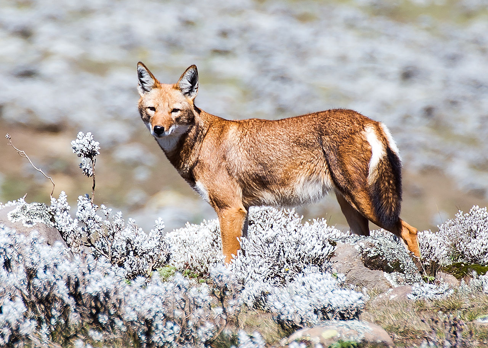

Rovdjurens betydelse
Att jaga rovdjur är något som alltid skett, men det finns stora konsekvenser för ekosystemet om de försvinner helt. Yellowstone är en park belägen i de klippiga bergen i västra delen av USA. Denna park har ett känt exempel på när människans utrotning av rovdjur har haft en negativ påverkan på ekosystemet.  Bild på varg Vargarna var en stor del av ekosystemet i Yellowstone vilket man först insåg några år efter alla blivit skjutna. Försvinnandet av vargarna ledde till att vissa djur som en gång trivdes i miljön flyttade. Anledningen till varför miljön ändrades var huvudsakligen att vargarna, som en gång jagat vapiti (en typ av hjort) nu kunde föröka sig och beta upp landskapet. När vargarna inte längre hade ihjäl vapiti så betydde detta att rovfåglar och rävar inte längre kunde äta resterna. Omgivningen i Yellowstone efter vargarnas försvinnande ändrades som en kedjereaktion, där alla djur var beroende av en balans.